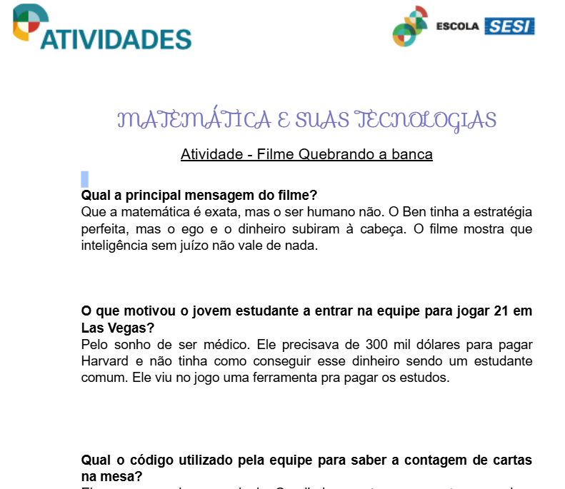
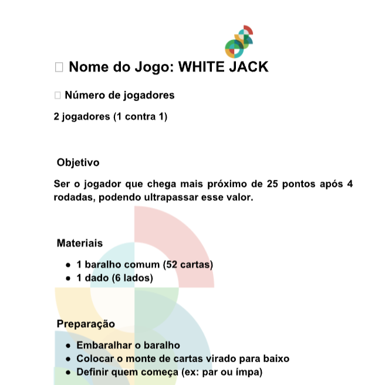

Atividades do 1º ao 3º Trimestre

Atividade baseada no filme assistido, contendo as respostas das perguntas propostas e a criação de um roteiro próprio sobre uma obra de Hollywood que utilize temas da matemática.
Competências e habilidades: C5, H30 e H31.
ACESSAR PROJETO
Elaboração de um projeto de jogo autoral fundamentado em conceitos matemáticos (probabilidades e combinatória), inspirado na temática de cassinos e contagem de cartas do cinema.
Competências e habilidades:C5, H30 e H31.
ACESSAR PROJETOConteúdo em desenvolvimento...